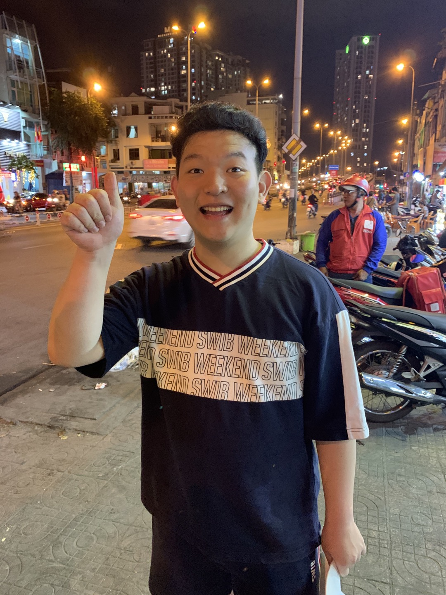

개노답(9)/멤버/김남경

- 본명: 김남경
- 별명: 마더러시아, 남경건설의 후계자, 안성별장주, dANmuGO
- 성별: (상)남자
- 출생: 2000년 12월 25일 출생
- 국적: 대한민국
- 종교: 무교
- MBTI: INTP
목차
개요
개노답(9)의 멤버인 김남경의 개인문서.
행적
특이사항
- 남경건설(주)의 후계자

많은 이들이 모르는 사실이지만 김남경은 남경건설(주)의 후계자이다.
본인의 이름을 따서 만들어진 만큼 회사를 그대로 물려받을 전망이며
건설 장비들에 대한 기본적인 지식을 갖추기 위해서 수원대학교 기계공학과를
재학 중이라는 것이 학계의 일반적인 정설이다.
여담
맨위로
개요
개노답(9)의 멤버인 김남경의 개인문서.
행적
특이사항
- 남경건설(주)의 후계자
많은 이들이 모르는 사실이지만 김남경은 남경건설(주)의 후계자이다.
본인의 이름을 따서 만들어진 만큼 회사를 그대로 물려받을 전망이며 건설 장비들에 대한 기본적인 지식을 갖추기 위해서 수원대학교 기계공학과를 재학 중이라는 것이 학계의 일반적인 정설이다.